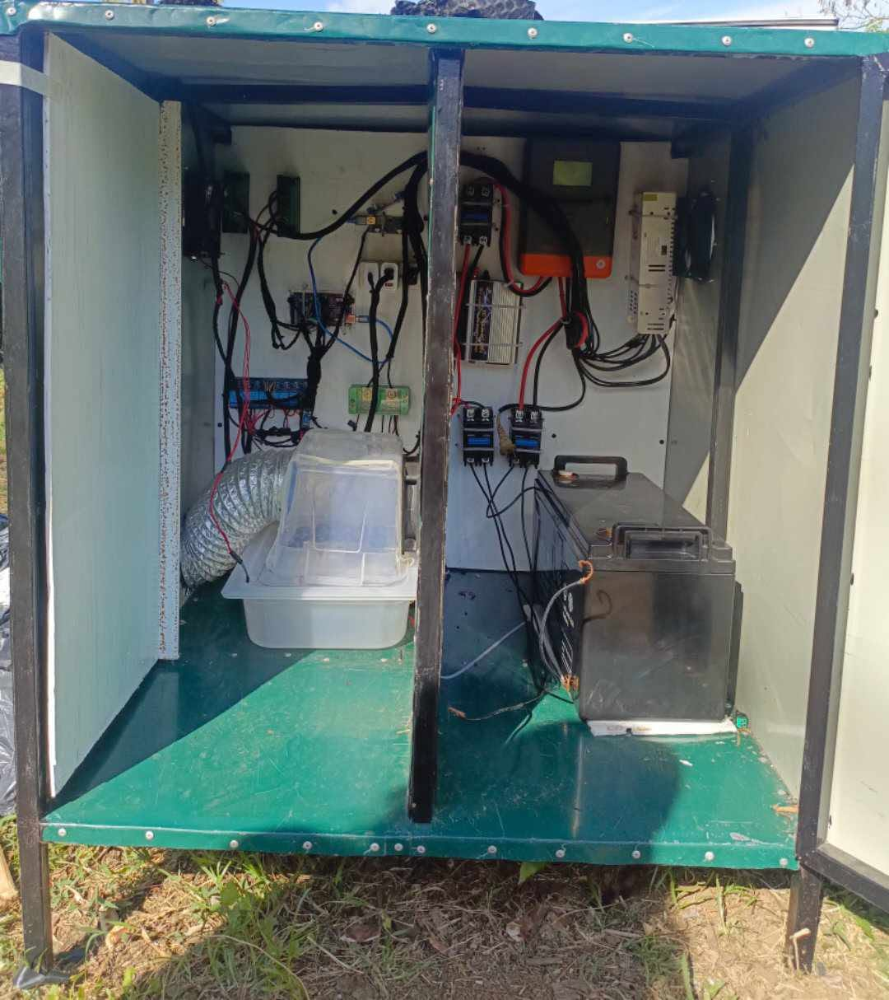
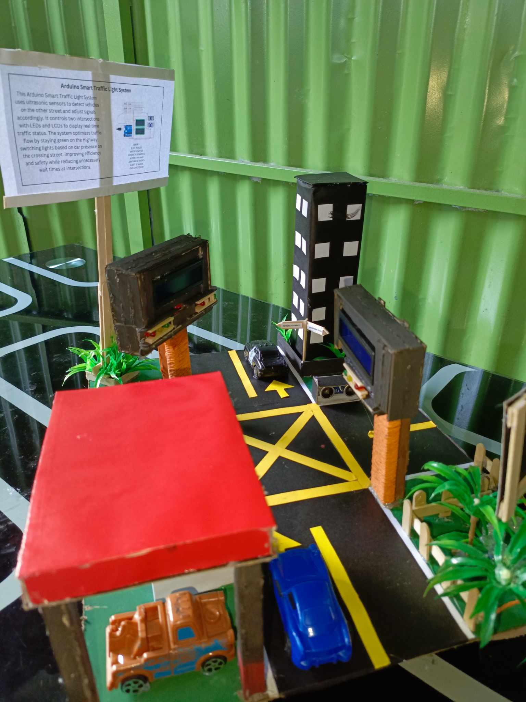

Arduino-based automation for fog and moisture control using sensors and motors to improve chili pepper yield.
A miniature traffic control system using sensors and Arduino for pedestrian and vehicle traffic simulation.
Built with Android Studio and Firebase, this mobile app monitors classroom availability and schedules.